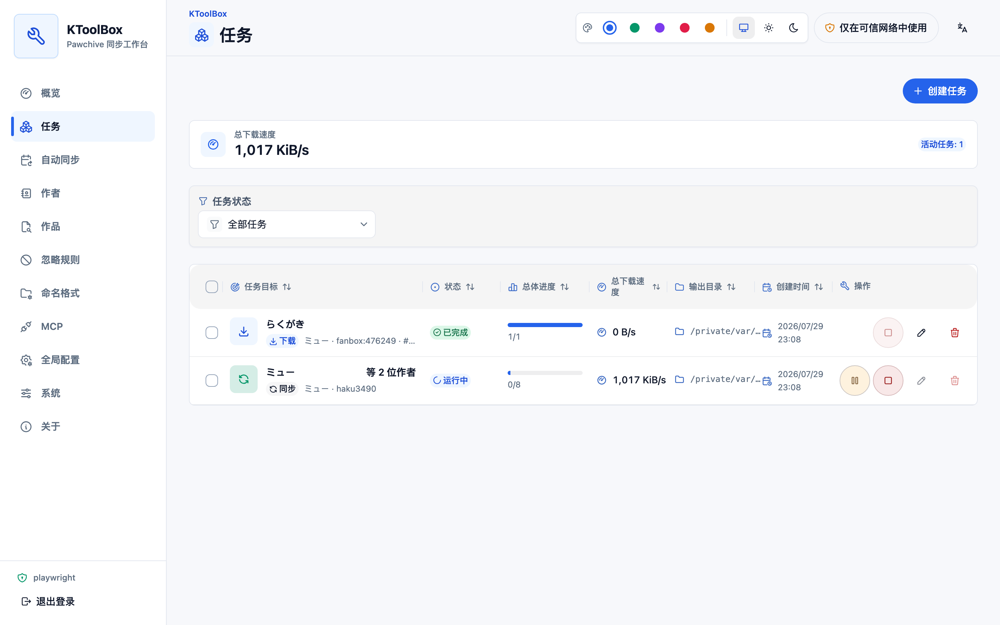
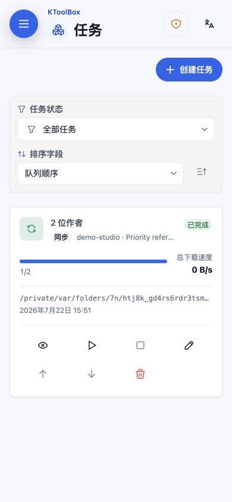
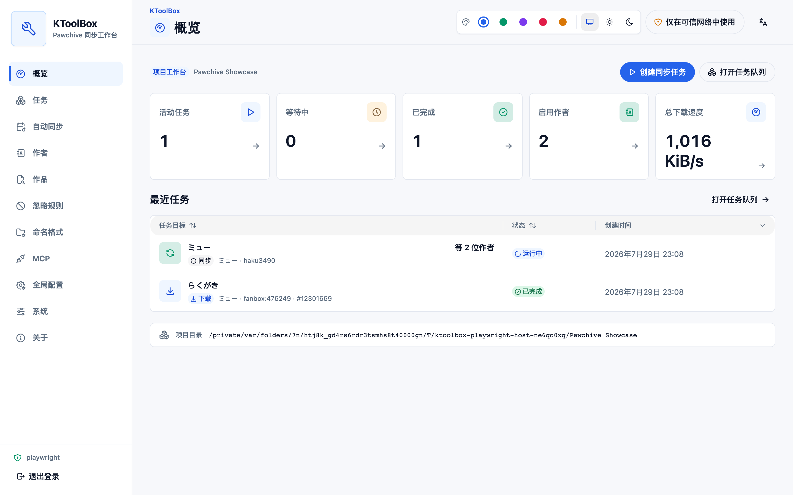
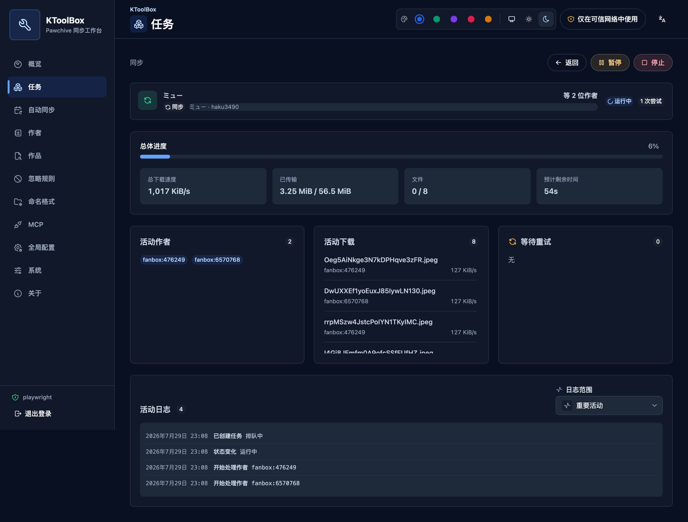
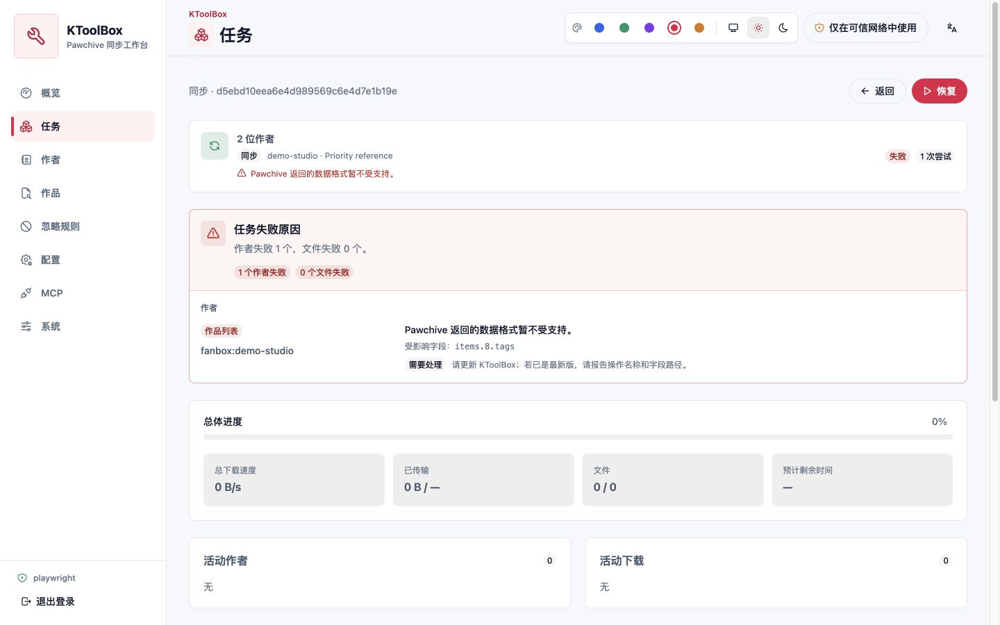
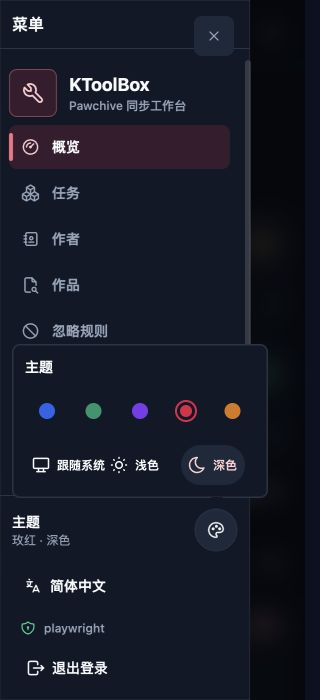
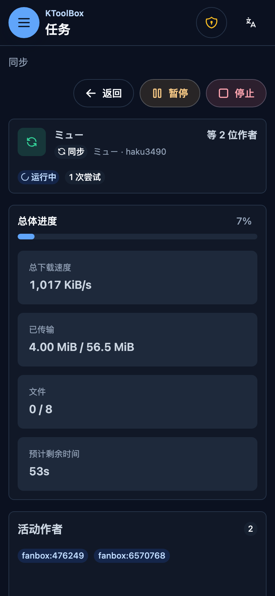
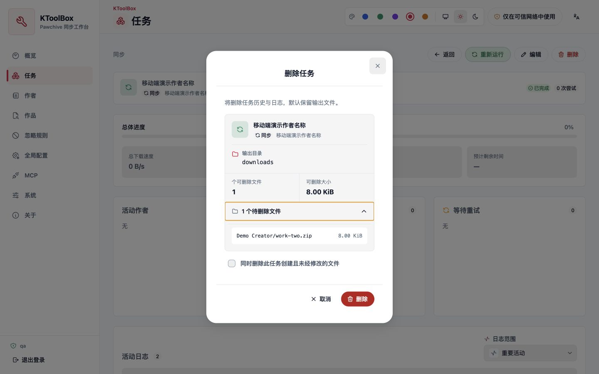
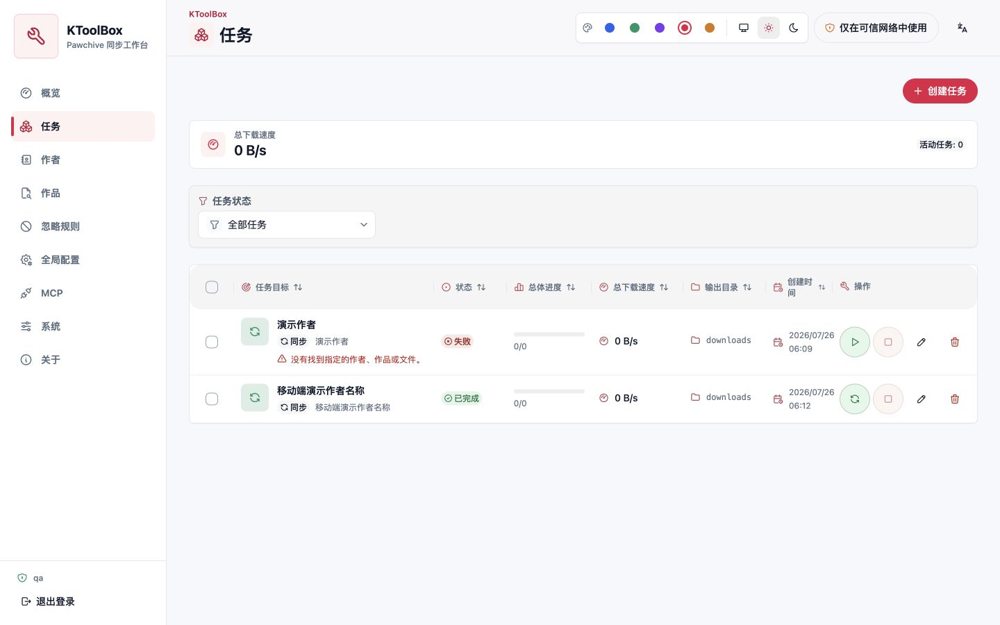

WebUI 작업과 실시간 업데이트¶
영구 큐는 작업 정의, 시도, 진행률, 진단 및 파일 소유권 기록을 함께 보관합니다. 이 페이지에서는 실행 제어와 실시간 동기화를 설명합니다.
작업 수명 주기¶
sync와 download 작업은 해당 CLI 입력 전체를 보존합니다. 대상 없는 동기화는 작업 생성 시 현재 활성 목록을 확인합니다. 각 시도는 변경 불가능하고 비밀이 제거된 설정 스냅샷을 받으며 이후 설정 변경은 향후 시도에만 영향을 줍니다.
각 작업은 정규화 대상 키와 선택적 게시물 제목 및 크리에이터 이름이 있는 표시 전용 스냅샷도 저장합니다. 오프라인에서도 읽을 수 있고 실행, 중복 제거 또는 리소스 잠금에 영향을 주지 않습니다. 큐 행은 출력 경로 대신 대상을 먼저 표시하고 세부 정보, 일시 중지/재개, 중지, 편집, 순서 및 삭제 컨트롤을 직접 표시합니다.


최상위 큐는 기본적으로 작업 두 개(KTOOLBOX_WEBUI__MAX_ACTIVE_TASKS)를 실행하고 각 작업은 설정된 크리에이터 및 파일 동시성을 유지합니다. 동일한 활성 작업은 기존 작업으로 확인됩니다. 정규화된 출력, 크리에이터 또는 게시물이 겹치는 작업은 리소스 잠금이 해제될 때까지 blocked에서 기다립니다.
실시간 이벤트는 재연결을 지원하는 SSE를 사용합니다. REST 작업 상태가 기준이며 task.status 이벤트만 작업 상태를 변경할 수 있습니다. 개별 파일 완료가 상위 작업을 조기에 완료시키지 않습니다. 총 다운로드 속도는 5초 이동 창과 짧은 파일 전환 유예 시간을 사용하므로 파일이 바뀔 때 0으로 깜박이지 않습니다. 개요와 작업 페이지에는 실제 실행 중인 모든 작업의 합산 속도가 표시됩니다.

상세 보기는 준비된 크리에이터, 파일, 바이트, 전체 진행률, 합계 및 파일별 속도, ETA, 건너뜀/실패 수, 활성 크리에이터, 활성 다운로드, 재시도 대기 및 구조화 로그를 보고합니다. 활성 다운로드, 재시도 및 전송 이벤트에는 읽기 어려운 Pawchive 저장소 식별자 대신 프로젝트 이름 형식으로 생성된 최종 파일 이름이 표시됩니다. 세 실시간 패널은 높이가 고정되고 독립적으로 스크롤되어 동시 실행 수가 바뀌어도 로그나 페이지가 움직이지 않습니다. 기본 활동 보기는 바이트 단위 진행률과 일반 큐 잡음을 숨기며 필요할 때 전송 또는 전체 진단 보기로 전환할 수 있습니다.

실패한 시도는 실패 수만 남기지 않고 크기가 제한되고 민감 정보가 제거된 진단 보고서를 저장합니다. 작업 행에는 첫 번째 유용한 원인이 표시되고, 상세 화면은 크리에이터와 파일별로 실패 단계, 재시도 가능 여부, 안전한 필드 경로와 권장 조치를 보여 줍니다. 업스트림 응답 본문, 작품 제목, Cookie, 전체 다운로드 URL은 저장하지 않습니다. 좁은 화면에서는 64px 작업 표시줄, 12px 페이지 여백, 간결한 외관 Popover를 사용해 폼 문자를 16px 미만으로 줄이지 않고 더 많은 정보를 표시합니다. MCP 도구 목록은 접을 수 있는 HeroUI 그룹을 사용하며 검색 또는 권한 필터링 시 일치 그룹을 자동으로 펼칩니다.



일시 중지는 협력 방식입니다. 활성 네트워크 스트림을 닫고 완료된 파일과 재개 가능한 임시 파일을 유지하며 재개할 때 새 시도를 만듭니다. 일시 중지, 중지, 실패 또는 중단(interrupted) 상태만 재개할 수 있습니다. 완료된 동기화에는 같은 작업 기록으로 새 시도를 만드는 “다시 실행”이 제공되며 완료된 단일 작품 다운로드에는 제공되지 않습니다.
일반 작업 삭제는 큐 기록, 시도 및 로그만 제거합니다. “출력 삭제”는 읽기 쉬운 대상, 출력 디렉터리, 파일 및 바이트 합계와 펼칠 수 있는 상대 경로를 먼저 표시하며 내부 UUID는 노출하지 않습니다. 확인 후 해당 작업이 생성한 것으로 기록된 변경되지 않은 일반 파일만 제거합니다.


자동 새로 고침¶
로그인 후에는 하나의 SSE 연결만 사용하여 여러 브라우저 탭 사이에서 작업, 크리에이터, 제외 규칙, 설정, MCP 토큰 및 현재 열린 원격 디렉터리를 동기화합니다. 구조 변경은 보통 1초 안에 표시되며, 작업 진행률은 전체 작업 목록을 반복해서 내려받지 않고 로컬 쿼리 캐시를 직접 갱신합니다.
실시간 연결을 5초 넘게 사용할 수 없으면 WebUI가 간결한 경고를 표시하고 로컬 프로젝트 데이터만 10초마다 새로 고칩니다. SSE가 복구되면 대체 폴링을 즉시 중지하고 한 번 전체를 갱신합니다. Pawchive 검색, 작품 상세 정보 및 버전 확인은 항상 요청할 때만 실행되며 대체 폴링이 호출하지 않습니다.
시스템 페이지에서 현재 업데이트 방식과 마지막 신호 시간을 확인하고 즉시 새로 고침 또는 다시 연결할 수 있습니다. 저장하지 않은 양식을 편집하는 동안 다른 탭이나 MCP 클라이언트가 데이터를 변경하면 KToolBox는 초안을 보존하고 새 데이터를 다시 불러올지 계속 편집할지 묻습니다. 저장 시 기존 ETag 및 작업 상태 충돌 검사도 계속 적용됩니다.